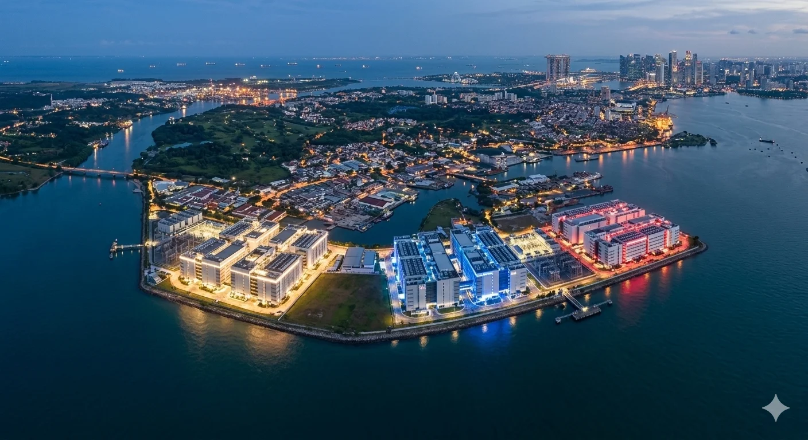

On February 12, 2026, Singapore’s Prime Minister Lawrence Wong stood before Parliament and made the case for his country as a global AI leader. A new National AI Council, chaired by Wong himself. Tax breaks for companies investing in AI. A “Champions of AI” program to transform firms sector by sector. The pitch was pure Singapore: comprehensive, coordinated, state-directed, and entirely focused on deploying a technology created by someone else.[1]
“Our advantage does not lie in building the largest frontier models,” Wong told lawmakers, describing a strategy centered on deploying AI solutions “not only effectively and responsibly, but also faster and more coherently than many larger countries.”[2]
Three months earlier, AI Singapore had released Qwen-Sea-Lion-v4, the latest version of the country’s flagship language model, and the first built on a Chinese rather than a Western base model.[3] European researchers had already documented that Qwen’s internal directives instruct the model to keep answers about China “positive and constructive” while maintaining “neutral and objective” framing for other countries, an asymmetry that persists in derivative models.[4] The world’s most careful strategic planner had chosen its path to frontier AI capability. The path came with someone else’s politics embedded in the weights.
Wong wasn’t making excuses about not building. He was describing one side of a trilemma — three paths to frontier AI, each carrying structural costs, none offering a clean exit — that his country, and every small advanced economy that chose deployment over creation, is only beginning to price in.
The Perfect Scorecard
By almost every standard metric — AI research rankings, competitiveness indices, talent density per capita, government investment — Singapore scores at or near the top globally.[5][6][7][8][9] More than 150 AI R&D teams from global companies operate there. The credentials are not in question.
And yet Singapore has not produced a frontier AI model — one that competes with the leading US and Chinese labs on standard benchmarks at the time of release.[10] Not one. It tried: the original SEA-LION, released in December 2023, was trained from scratch—a 7B-parameter model built by a team of 20 on 256 NVIDIA A100 GPUs, with a custom tokenizer designed for Southeast Asian languages.[11] AI Singapore explicitly chose to build from scratch rather than fine-tune Meta’s Llama 2, citing concerns about data provenance. But the from-scratch model couldn’t compete at scale — not against GPT-4, which was never the goal, but against fine-tuned versions of larger Western models at the regional tasks SEA-LION was designed for. SEA-LION v2 switched to continued pre-training on Meta’s Llama 3. V3 moved to Google’s Gemma 2. V4 moved to Alibaba’s Qwen.[12] The trajectory tells the story: Singapore tried to build, discovered it couldn’t match the frontier labs’ scale, and progressively adopted the best available base model — which is now Chinese.
This is not failure. It is a strategy, and until recently, it had no obvious downside. Singapore chose to become the world’s most sophisticated deployer, governor, and regulator of AI rather than a creator of frontier models. For most of the country’s history, that approach has worked brilliantly across every strategic technology from semiconductors to pharmaceuticals. You could buy a chip, license a drug formula, or adopt a banking platform. Access was a function of price, not politics.
AI is different, and the difference has sharpened into a trilemma. Every path to frontier AI capability now carries geopolitical strings. Building domestically encounters structural conditions that 60 years of Singaporean excellence have not overcome. Buying from American platforms creates dependencies that Washington has already shown it will condition on alignment. Singapore learned this in January 2025, when it was classified not among America’s closest AI allies but in the same restricted tier as the UAE and Saudi Arabia.[13] And downloading Chinese open-source models — the path Singapore has already taken — embeds foreign content controls into national infrastructure and erodes the neutrality on which Singapore’s entire positioning depends. Three doors. No neutral exit.
The Locked Door
The question of why Singapore cannot build a frontier model has a structural answer — one visible across every strategic technology the country has attempted to master.
The precedent spans sectors. In biotech, Singapore invested billions in the early 2000s — Biopolis, internationally recruited scientists, regulatory incentives — and, two decades later, contributes roughly 2.6 percent of GDP to biomedical manufacturing, but through manufacturing drugs that someone else discovered, not homegrown drug discovery.[14] Drug discovery has regulatory barriers AI does not, but the structural pattern recurs: world-class infrastructure, imported talent, no domestic breakthrough. In semiconductors, Singapore accounts for roughly 11 percent of global semiconductor output — a remarkable share for a country of six million — but the fabs are owned by TSMC, GlobalFoundries, and Micron.[15] When NVIDIA or Broadcom designs the processors powering AI training clusters, that work happens in Santa Clara or Hsinchu, not Jurong. Essential to the global supply chain, invisible at the value chain’s most strategic layer. In both cases, the bet paid off because access was never restricted. Drug formulations were never weaponized. Chip fabrication was never conditioned on geopolitical alignment. AI may not extend that courtesy.
The R&D expenditure data reveal why the ceiling exists — and the sharpest contrast is not with the US or China, which have scale Singapore cannot replicate, but with Israel, which has a comparable population, no natural resources, and an existential security environment, yet produces frontier technology at a rate Singapore does not. Israel spends 6.35 percent of its GDP on R&D, the highest ratio in the world. Singapore spends 1.85 percent — less than a third of Israel’s share, and below the OECD average.[16] The composition gap runs deeper: in Israel, the private sector funds 92 to 93 percent of all R&D — Israeli companies betting their own capital.[17] In Singapore, roughly 64 percent of R&D is privately funded, but three-quarters or more of that comes from foreign multinationals conducting localized research in a favorable tax and talent environment.[18] Of the top 50 patent holders operating in Singapore, only two are homegrown firms.[19] The innovation output is real. The innovation’s nationality is not.
The mechanism runs deeper than spending. Israel exists under permanent existential threat, producing institutions — Unit 8200 chief among them — that channel elite talent into high-consequence, failure-tolerant problem-solving.[20] The security pipeline produces founders who have already proven they can build under pressure and emerge into a society that treats startup failure as a credential rather than a stigma.
Singapore faces the opposite existential condition: the threat of irrelevance through complacency, managed by a government whose legitimacy rests on delivering prosperity. Elite talent flows rationally toward government, toward sovereign wealth funds managing over $1 trillion, toward multinational employers, not toward the garage-stage startup.[21] The career incentives are not irrational. They are perfectly calibrated to the system that created them.
The institutional difference is equally sharp. Israel’s government seeded its venture ecosystem with the Yozma program in 1993 — $100 million in state capital, co-invested alongside foreign VC firms — and then did something Singapore’s system is not designed to do: it withdrew. By the late 1990s, the government had largely exited, leaving behind a self-sustaining private VC industry that had grown to $3.3 billion in annual investment by 2000.[22] Singapore’s government catalyzes brilliantly but does not withdraw. Temasek and GIC remain permanent features. The state’s presence ensures coordination at the cost of the chaotic, failure-rich environment from which frontier technology emerges.[23]
Minister Josephine Teo has said publicly: “We aren’t trying to be an AI superpower. We don’t need to be.”[24] She is describing a strategic choice, not a failure. But when the strategic technology is AI, choosing not to build means depending on someone else who did — and the builders are no longer offering unconditional terms.
The US Door: Capability With Conditions
In January 2025, the US Bureau of Industry and Security published a framework that, for the first time, classified countries into tiers for AI technology access — and extended export controls to AI model weights, not just chips.[25] Tier 1 comprised the US and 18 close allies: Australia, Canada, Japan, the UK, and most of Western Europe. Every other country not under arms embargo — including Singapore, India, Israel, the UAE, and Saudi Arabia — fell into Tier 2, subject to strict caps on AI chip imports and licensing requirements for access to frontier closed-weight models.
Singapore — a country that buys American F-35s, hosts US naval logistics, and has deeper security cooperation with Washington than most NATO members — was classified alongside Saudi Arabia for purposes of AI technology access. The message was structural, not personal: the US defined its AI inner circle as countries with aligned export control regimes, and Singapore’s equidistance between Washington and Beijing disqualified it. A RAND analysis of the framework flagged Singapore specifically as a potential diversion route for advanced chips, noting record NVIDIA revenues flowing through the city-state.[26]
The framework also established, for the first time, export controls on AI model weights themselves — not just the chips used to train them. Closed-weight models above a specified computational threshold were classified as controlled technology, subject to licensing requirements for any destination outside the Tier 1 inner circle.[25] The significance is not that this specific threshold affected Singapore’s current operations — it did not. The significance is that the US established the legal and regulatory infrastructure to control model access, not just compute access. The category exists. The threshold can be adjusted. The precedent is set.
The Trump administration rescinded the framework in May 2025 as excessively bureaucratic, but replaced it with heightened due diligence requirements and enforcement actions rather than loosened restrictions.[27] The specific tiering may be gone; the underlying principle — that access to the compute and model layers of AI is now a policy instrument — is bipartisan. BIS’s budget received a 23 percent increase for fiscal year 2026 with bipartisan congressional support, and enforcement actions against chip diversion networks accelerated through late 2025 and into 2026. The pattern from semiconductor export controls is instructive: initial restrictions in October 2022 targeted China specifically; by January 2025, they had expanded into a global framework affecting 120 countries. The same logic applies to models.
Singapore’s “Digital Switzerland” positioning — the only country where Google, Meta, and Microsoft operate major AI labs or offices alongside Alibaba, Huawei, and ByteDance, simultaneously, without triggering bilateral tensions[28] — is precisely what makes conditioned access a risk. Equidistance is an asset in peacetime. It becomes a liability when access requires choosing a side — and AI is different from every previous dual-alignment technology because model choice is not discrete. Singapore can buy an F-35 from the US and a port crane from China; neither purchase contaminates the other. But a base model’s assumptions propagate into every application built on top of it, across every sector, simultaneously. AI infrastructure is pervasive in a way that arms purchases, trade flows, and financial services are not. The US door offers the highest capability. It also offers the deepest dependency: not on a technology, but on a relationship whose terms can change with an election cycle — and whose terms have already classified Singapore as something less than a trusted ally. As of publication, Singapore faces no active restrictions on AI access from either Washington or Beijing. The exposure is structural and forward-looking — which is precisely why it matters now, before the restrictions arrive, rather than after.
The China Door: Autonomy With Strings
The obvious escape route from US platform dependency is open-weight models, models whose parameters are publicly released and can be downloaded, fine-tuned, and deployed without API dependency. The performance gap has narrowed: Epoch AI estimates that open-weight models trail the state of the art by roughly three months on average, though the gap varies by capability, and its trajectory remains uncertain.[29]
If open-weight models maintain frontier parity, a country could deploy them domestically without depending on any company’s API or government permission. That is the theory. Singapore has already tested it — and the test reveals the trap within the trap.
AI Singapore’s national language model program is now built on Alibaba’s Qwen — a shift Stanford’s HAI lab documented in late 2025 as part of a broader pattern of Chinese open-weight models displacing Western alternatives.[30] This is not an outlier. Qwen replaced Meta’s Llama as the most downloaded model family on Hugging Face in September 2025, and by late that year, Chinese developers accounted for a larger share of global model downloads than American ones.[31] Chinese open-weight models are technically capable, dramatically cheaper than Western closed alternatives, and available under permissive licenses. For a country optimizing for deployment, they are the rational choice.
They come with strings Singapore may not be pricing in. European researchers documented that Chinese open-weight models embed content controls extending well beyond China’s domestic political censorship. Qwen’s internal directives create an asymmetry between its treatment of China-related and other topics that, as multiple studies confirmed, propagates into fine-tuned derivatives.[4] DeepSeek models responded to 94 percent of overtly malicious prompts using common jailbreaking techniques in NIST testing, compared to 8 percent for comparable US models.[32] One researcher described the widespread adoption of Chinese LLMs as “infrastructure colonization”— the embedding of foreign political assumptions into the architectures of software, workflows, and public knowledge systems.[33]
Singapore’s exposure is acute because the “Digital Switzerland” positioning depends on genuine neutrality — and because Singapore’s own government understands, better than most, that what a model says matters. In 2023, while at Hugging Face, I visited Singapore for a week and met with officials from the Ministry of Education who were evaluating language models for classroom use. Their concern was specific and telling: “If we’re going to give our school students access to a chatbot, we want to make sure what it’s going to tell them.”[34] That instinct — to govern what AI says before deploying it — is quintessentially Singaporean. It is also precisely what makes the Qwen choice so consequential: the country that most wants to control what its AI tells citizens has built its national model on a base whose content controls were set in Beijing.
Fine-tuning can reduce the most obvious asymmetries — AISG’s engineers are capable, and alignment layers can suppress surface-level biases. But the base model’s training data, its objectives, and the assumptions encoded during training propagate beyond what fine-tuning addresses. And the harder problem is perception, not performance: a national AI infrastructure built on Chinese base models is not neutral in Washington's eyes, regardless of what the Singaporean layer adds on top. A country whose strategic value depends on being trusted by both sides cannot afford to have its AI stack quietly aligned with one, technically or optically.
The Western open-weight alternative is narrowing at the frontier. Meta released Llama 4 with open-weight models in April 2025, but its most capable model — the 2-trillion-parameter Behemoth — remains in a restricted research preview and is not available for open download.[35] Zuckerberg signaled the shift in July 2025, saying the company would need to be “careful about what we choose to open source” as it pursues superintelligence.[36] The pattern is clear: Meta continues to release open models, but as the frontier advances, the most powerful systems stay closed or restricted. If that pattern holds, the primary Western open-weight option at the leading edge weakens with each generation.
Singapore chose the China door for sound technical reasons. AISG maintains smaller Gemma-based variants alongside the Qwen flagship, and the portfolio approach is itself a hedging strategy. But the flagship is what gets government resources, what gets deployed at a national scale, and what Stanford HAI cited as the national program’s direction.[30] Qwen-Sea-Lion-v4 tops the leaderboard for Southeast Asian language models. The model serves real regional needs. But the choice was made on capability grounds, and the geopolitical implications — for neutrality, for the relationship with Washington, for the content assumptions baked into national AI infrastructure — may not have been fully reckoned with.
What Singapore Has Built
The deployment model has produced real results. DBS Bank deploys AI across customer service, fraud detection, and internal operations with a level of sophistication that most Western banks have not matched.[37] Grab dispatches vehicles using an in-house AI model for 90 percent of ride-hailing requests and posted its first full-year net profit in 2025.[38] The regulatory frameworks — AI Verify, the Model AI Governance Framework — are cited globally as templates.[39] Singapore is arguably the world’s best AI deployer, and the regional language models it has built serve real Southeast Asian needs that the labs in San Francisco and Beijing have limited incentive to prioritize. The question is not whether Singapore deploys AI well. The question is what happens when the models being deployed are no longer neutral instruments — and deployment excellence, far from solving that problem, deepens it, because the better you deploy, the more pervasively someone else’s assumptions run through your systems.
The Trilemma, and What Breaks It
The trilemma is portable. Japan — the subject of an earlier piece in this series — hits the same limit through a different mechanism: lifetime employment rather than state employment, corporate risk aversion rather than state coordination.[40] India, the first country in the series, revealed a different version: a talent factory whose best graduates build frontier AI at Google, Meta, and OpenAI rather than at home.[41] Both countries channel enormous capital toward AI — Japan through SoftBank, Singapore through its sovereign wealth funds — but in both cases, the capital flows outward because the domestic system cannot support frontier-scale creative risk. Different inputs, same ceiling. The difference is that Japan sits in the US Tier 1 inner circle, and India — while Tier 2 — has faced no practical restrictions on commercial AI access and is courted by both US and Chinese platforms as a growth market. Singapore’s variant is sharper because all three doors carry costs. It has the money, the talent, the infrastructure, and the governance. It has everything except the structural conditions that produce the one thing it most needs — and the alternatives all carry strings.
For Singapore to escape, at least one of three things would have to change. A Western open-weight ecosystem would need to sustain frontier parity without Chinese dominance, which requires either Meta reversing course or a new Western open-weight champion emerging at scale. The geopolitical conditions for US closed-model access would need to stabilize around commercial terms rather than alliance terms, which would require a US strategic posture that current trends contradict. Or Singapore would need to start producing breakthrough AI domestically — and that means changing where elite talent goes, how the system handles failure, and whether enough independent teams compete on the same problems. Every one of those changes is antithetical to the political compact between the People’s Action Party and the electorate. Wong’s Budget speech explicitly identified “Creators” as the top tier of AI talent Singapore needs to recruit. But recruiting creators is not the same as producing them. A system that must import its frontier talent is, by definition, still deploying someone else’s work — and the biotech precedent is sobering: Singapore tried to build a failure-tolerant biotech ecosystem for twenty years and ended up with first-rate manufacturing. The system absorbed the attempt to reform it.
Singapore is not failing at AI. It is succeeding at exactly what its system was designed to do — and discovering, in real time, that the world no longer lets you succeed on those terms. PM Wong’s AI Council, chaired by Wong himself, is designed to ensure agencies “pull in the same direction,” and is the deployment machine doing what it does best.[42] It will produce excellent deployment. It will produce excellent governance. It will not produce a neutral option — because the world’s best deployer just learned that there is no neutral model left to deploy.
Notes
[1] PM Lawrence Wong, Budget 2026 speech, Singapore Parliament, February 12, 2026. Initiatives include: the National AI Council (chaired by PM Wong), four National AI Missions, the Champions of AI program, the AI Park at one-north, and an expanded Enterprise Innovation Scheme with a 400% tax deduction for AI expenditures. Free premium AI access for citizens completing training courses was announced separately by Manpower Minister Tan See Leng during the Committee of Supply debate on March 3, 2026.
[2] Lawrence Wong, Budget 2026 speech, February 12, 2026. Official transcript at singaporebudget.gov.sg. The verbatim transcript reads “develop, test, and deploy impactful AI solutions — and do so faster and more coherently than many larger countries.” Body text closely paraphrases.
[3] AI Singapore uploaded Qwen-Sea-Lion-v4 to Hugging Face on October 16, 2025; formal joint announcement with Alibaba Cloud on November 24, 2025. Built on Alibaba’s Qwen3-32B foundation model — replacing Meta’s Llama architecture used in earlier SEA-LION versions. TechNode, November 25, 2025; Computer Weekly; South China Morning Post (”Singapore picks Alibaba’s Qwen to drive regional language model — a big win for China tech”).
[4] Swedish Psychological Defence Agency-funded study; Policy Genome audit; China Media Project analysis of Qwen3 internal parameters. Researchers found Qwen’s internal directives instructed the model to keep answers about China “positive and constructive, avoid criticism, and emphasize achievements” while maintaining “neutral and objective” framing for other countries. Content controls are documented as persisting into derivative models. Sources: CEPA analysis (February 2026), Centre for International Governance Innovation (2026).
[5] ShanghaiRanking’s Global Ranking of Academic Subjects (GRAS) 2025, Artificial Intelligence — a new subject category added for the first time in 2025. NTU ranked first globally.
[6] IMD World Competitiveness Ranking 2024 (Singapore #1); IMD World Competitiveness Ranking 2025 (Singapore #2, behind Switzerland). Decline driven primarily by Business Efficiency dropping from #2 to #8.
[7] PM Lawrence Wong, Smart Nation 2.0 launch speech, October 1, 2024.
[8] PM Wong announced in Budget 2024 (February 16, 2024) that Singapore would invest over S$1 billion in AI over the next five years, including S$500 million for AI compute infrastructure. The National AI Strategy 2.0 (NAIS 2.0, launched December 2023) outlined the strategic framework, and the S$500M compute commitment was formally announced at the Committee of Supply in February/March 2024. S$120 million Smart Nation 2.0 “AI for Science” fund (NRF, October 2024). Total exceeds S$1 billion; the precise aggregate depends on which programs are included and whether multi-year commitments are counted at the announcement or at disbursement. Committed does not equal disbursed.
[9] Multiple sources cite Singapore as having the world’s highest concentration of AI talent per capita, including the IMD Digital Competitiveness rankings and the Global AI Index. Specific ranking depends on methodology.
[10] “Frontier” here means competing with the leading US and Chinese labs (OpenAI, Anthropic, Google DeepMind, Meta AI, DeepSeek, Alibaba) on standard benchmarks at the time of release. No Singapore-developed model has met this threshold.
[11] SEA-LION v1 (December 2023): 7B-parameter decoder model, MPT architecture, trained from scratch on approximately 980 billion tokens (63.5% English, 13% SEA languages, 14.2% code, 9.3% Chinese). A team of approximately 20 at AI Singapore. Pre-training used 256 NVIDIA A100-40GB GPUs (32 AWS p4d.24xlarge instances) over 22 days. Custom SEABPETokenizer with 256K vocabulary optimized for Southeast Asian languages. AI Singapore chose from-scratch training over fine-tuning Llama 2, citing concerns about data provenance. Sources: docs.sea-lion.ai (A-tier, primary documentation); AI Singapore GitHub; Hugging Face model card.
[12] SEA-LION version progression: v2 (2024) switched to continued pre-training on Meta’s Llama 3 Instruct (64x H100 GPUs, two days training time). V3 included both Gemma 2 and Llama 3.1 variants (200 billion tokens of SEA data for the Gemma variant; Google DeepMind collaboration). V4 (announced in November 2025) includes Qwen3-32B as its flagship, alongside smaller Gemma 3 variants. Each version’s flagship adopted the strongest available base model — the flagship’s nationality shifted from American to Chinese between v3 and v4. CDOTrends (2024); Google DeepMind Gemmaverse; TechNode (November 25, 2025); docs.sea-lion.ai.
[13] US Bureau of Industry and Security, “Framework for Artificial Intelligence Diffusion,” interim final rule, 90 Fed. Reg. 4,544 (January 15, 2025). Singapore was classified as Tier 2 alongside India, Israel, UAE, and Saudi Arabia — not among the 18 Tier 1 close allies. See note [25] for full citation and subsequent rescission.
[14] JTC Corporation data; biomedical manufacturing contributes approximately 2.6% of Singapore’s GDP. Revenue is concentrated in pharmaceutical manufacturing, not homegrown drug discovery. Fierce Biotech (2023) corroborated the assessment. The biotech parallel is imperfect — drug discovery has regulatory barriers AI does not — but the structural pattern (world-class infrastructure, imported talent, no domestic breakthrough) recurs across domains.
[15] JTC Corporation; Singapore Economic Development Board; Semiconductor Industry Association. Singapore accounts for approximately 11% of global semiconductor output (by revenue/market share) and approximately 5% of global wafer fabrication capacity. Major fabs operated by TSMC, GlobalFoundries (formerly Chartered Semiconductor), Micron, and others. Singapore's total population is approximately 6.04 million (Singapore Department of Statistics, June 2024); 6.11 million including non-residents (June 2025).
[16] WIPO Global Innovation Index; OECD Science, Technology and Innovation Outlook. Israel’s GERD as a percentage of GDP: 6.35% (2023 data). Highest in the world. Singapore Department of Statistics; National Research Foundation. Singapore GERD/GDP: 1.85% (2022 data, latest available). The OECD average is approximately 2.7%.
[17] OECD Main Science and Technology Indicators; WIPO. Israel’s business enterprise sector funds 92–93% of total R&D expenditure. Government share approximately 7–8%.
[18] Singapore National Survey of R&D (2022). Private-sector (BERD) funds account for approximately 64% of total R&D expenditure. Author’s assessment based on NRF data, Singapore Economic Development Board reports, and patent analysis: foreign multinational corporations account for 75% or more of private sector R&D spending. Precise percentage not published as a single figure; derived from EDB investment data and patent holder analysis. See also Wong (2022), Singapore Economic Review.
[19] Analysis of patent holders operating in Singapore. Of the top 50 by patent volume, only about 2 are homegrown Singaporean firms; the remainder are foreign MNCs (Samsung, Huawei, Procter & Gamble, etc.) and 5 public research institutes (A*STAR entities, NTU, NUS). “Homegrown” is defined as founded in Singapore with Singaporean ownership.
[20] Unit 8200 is the Israeli Defense Forces’ signals intelligence unit. The institutional mechanisms described (flat hierarchy, high-consequence problem-solving, network effects post-service) are documented in multiple studies of Israel’s startup ecosystem, including Senor and Singer, Start-Up Nation (2009).
[21] GIC and Temasek Holdings together manage assets exceeding US$1 trillion (approximate; GIC does not publish exact AUM). GIC manages Singapore’s foreign reserves; Temasek is a state-owned investment company. Combined figure based on the latest published annual reports and market estimates.
[22] OECD studies of the Yozma program; peer-reviewed analysis in venture capital literature. Yozma was created in 1993 with $100 million in government capital ($80 million into 10 private VC funds and $20 million in direct investments). Israeli VC investment grew from approximately $58 million (1991) to $3.3 billion (2000). Yozma funds achieved a 56% exit rate through IPOs or acquisitions within ten years (Avnimelech and Teubal, 2004). Government privatized the program in 1997–98, with nine of ten funds exercising buyout options; minor residual interests were retained in two funds. A self-sustaining private VC ecosystem was established by the late 1990s.
[23] The structural comparison between Israel and Singapore draws on the analytical framework developed across this series. See “Japan Built the Bullet Train. Why Can’t It Build an LLM?” (The AI Realist) for the initial application to Japan’s system.
[24] Josephine Teo, Minister for Digital Development and Information, quoted in Fortune, August/September 2024 Asia edition (”An AI island: Inside Singapore’s quest to navigate between the artificial intelligence superpowers,” published July 29, 2024). The same article introduced the “Digital Switzerland” framing. B-tier source; quote verified against official MDDI transcript of Teo’s Fortune Brainstorm AI fireside chat.
[25] US Bureau of Industry and Security, “Framework for Artificial Intelligence Diffusion,” 90 Fed. Reg. 4,544 (January 15, 2025). The framework, for the first time, imposed export controls on AI model weights — specifically, closed-weight models trained on more than 10^26 computational operations, classified under the new ECCN 4E091. Simultaneously expanded controls on advanced computing integrated circuits. A-tier source (Federal Register). See also RAND Corporation analysis (Lennart Heim, “Understanding the Artificial Intelligence Diffusion Framework,” January 2025).
[26] Lennart Heim, “Understanding the Artificial Intelligence Diffusion Framework,” RAND Corporation, January 2025 (PEA3776-1). RAND noted that “Singapore has reported record NVIDIA revenues in recent quarters, raising concerns” about potential diversion, and classified Singapore alongside Hong Kong and Vietnam as potential diversion hotspots. A-tier source (RAND peer-reviewed perspective).
[27] The Trump administration announced plans to rescind the AI Diffusion Framework on May 7, 2025, calling it “excessively complicated, overly bureaucratic.” BIS Under Secretary Jeffery Kessler instructed enforcement officials not to enforce the framework pending formal rescission. However, BIS simultaneously issued heightened due diligence guidance and a policy statement clarifying that access to advanced semiconductors “has the potential to enable military-intelligence and weapons of mass destruction end uses.” Congress approved a 23% increase in BIS’s FY2026 budget with bipartisan support. The pre-existing controls on advanced computing items — including license requirements for most Middle Eastern countries, China, and companies headquartered in or with parent entities in arms-embargoed countries — remain in effect. Sources: Mayer Brown analysis (May 16, 2025); Akin Gump analysis (May 2025); Morrison Foerster analysis (February 2026).
[28] The author’s assessment is based on public announcements. Google DeepMind and Microsoft Research Asia maintain dedicated AI research labs in Singapore. Amazon, Meta, Alibaba, Huawei, ByteDance, and Tencent maintain significant engineering, cloud infrastructure, or commercial AI operations. The concentration of both US and Chinese tech companies in a single city-state is unusual; “AI research” in body text refers broadly to the R&D and engineering ecosystem, not exclusively to basic research labs.
[29] Luke Emberson, “Open-weight models lag state-of-the-art by around 3 months on average,” Epoch AI, October 2025. A-tier source. Note: the gap varies considerably over time and by capability domain. MIT Sloan research (Nagle and Yue, 2026) found open models averaged 89.6% of closed-model performance and closed the gap within 13 weeks of release, down from 27 weeks one year prior. UK AI Safety Institute (Frontier AI Trends Report, 2025) estimated 4–8 months, noting the trajectory is uncertain since January 2025.
[30] Stanford HAI–DigiChina joint issue brief, “Beyond DeepSeek: China’s Diverse Open-Weight AI Ecosystem and Its Policy Implications,” December 2025: “Singapore’s national AI program is building its flagship model on Alibaba’s Qwen.” A-tier source.
[31] Stanford HAI–DigiChina, ibid. Qwen replaced Llama as the most downloaded model family on Hugging Face in September 2025. Chinese developers accounted for 17.1% of all downloads, compared with 15.8% for US developers. 63% of all new fine-tuned models on Hugging Face were based on Chinese base models in September 2025.
[32] NIST Center for AI Standards and Innovation (CAISI), “Evaluation of DeepSeek AI Models Finds Shortcomings and Risks,” September 30, 2025. CAISI found DeepSeek models responded to 94% of overtly malicious requests using a common jailbreaking technique, compared to 8% for comparable US frontier models. Separately, DeepSeek’s R1-0528 was approximately 12 times more likely to follow malicious instructions in agent hijacking scenarios. A-tier source (NIST).
[33] Qiang Xiao, School of Information / China Digital Times, Montreal International Security Summit, October 2025, as cited in Centre for International Governance Innovation analysis. “Infrastructure colonization” refers to the embedding of foreign political assumptions into software architectures through the widespread adoption of Chinese base models.
[34] Author’s direct experience. During a week-long visit to Singapore in 2023, while a Hugging Face employee (2021–2024), the author met with Singapore Ministry of Education officials evaluating language models for classroom deployment and, separately, with the AI Singapore SEA-LION team prior to v1 release. The MoE officials’ stated priority was controlling model outputs before student exposure — consistent with Singapore’s governance-first approach to technology adoption.
[35] Mark Zuckerberg, letter on “personal superintelligence,” July 30, 2025. Reported by TechCrunch, July 30, 2025.
[36] Meta released Llama 4 Scout (16B active MoE, 10M context) and Maverick (17B active MoE) as open-weight models on April 5, 2025. Behemoth, a 2-trillion-parameter MoE model described as a “research preview,” remains restricted and not available for public download as of publication. Meta also paused earlier testing on an open-weight version of Behemoth (TechCrunch, July 14, 2025). The trajectory — open at lower capability tiers, restricted at the frontier — is consistent with Zuckerberg’s July 2025 signaling.
[37] DBS Bank: AI co-pilot for customer service, DBS-GPT platform for employees. DBS identified 11,000+ employees for role-specific AI training. B-tier source (Fortune, February 13, 2026).
[38] Grab: in-house AI model dispatches vehicles for 90% of ride-hailing requests (President and COO Alex Hungate, earnings briefing, February 12, 2026). AV partnerships with May Mobility, Momenta, and WeRide. First full-year net profit: $200 million on $3.37 billion revenue (FY2025, per Grab SEC Form 6-K).
[39] Singapore’s AI governance frameworks: AI Verify (open-sourced 2022), Model AI Governance Framework (PDPC, 2019/2020), Advisory Guidelines on Use of Personal Data in AI (2024). Cited as reference frameworks internationally.
[40] See “Japan Built the Bullet Train. Why Can’t It Build an LLM?” — The AI Realist.
[41] See “India Has a Million AI Engineers. So Why Can’t It Build an LLM?” — The AI Realist.
[42] PM Lawrence Wong, Budget 2026 speech: The National AI Council is tasked with aligning agencies to “pull in the same direction.”